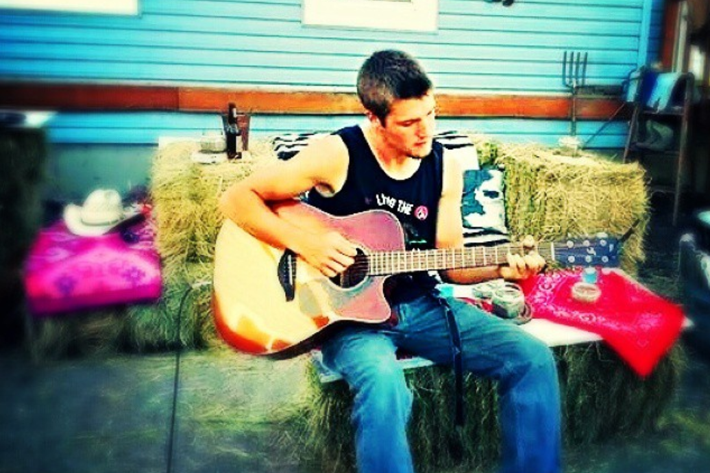
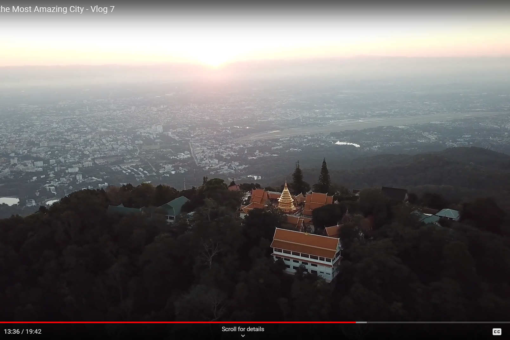

2019

Jacob Irwin-Cline
Passion for Solving Complex Problems with Simple Solutions
A little about me:
My name is Jacob Irwin-Cline. I began my professional career with high-intensity blue collar jobs such as roofing and general construction in central Oregon, USA. After learning essential team management skills and becoming an effective foreman for my crew in less than 6 months, I began shifting my focus towards formal education. My goal was to learn how to operate my own business with effective big-picture goals.
I relocated near my preffered school, earned my first transfer degree, and ulimately attended Portland State University in Portland, Oregon. During this time, I handled a career in private security for a premier full-service security and investigations company, Corpoarate Crime Control Association. I rapidly demonstrated potential in this industry as well, and after a year of service, I was personally handling multiple teams and client contracts in a project management role.
During my employment and schooling I developed an interest in tech. What started off as an interest soon turned into a deep held passion and I began teaching myself programmining languages such as JavaScript, Ruby, and R. I'm currently developing and refining these skill constantly, with eyes set on renowned vocational schools to take my expertise to the next level. As far as my formal education in business, By June 15th of 2019, I was walking with 2 degrees in specialized business knowledge: Management and Leadership, and Human Resource Management. The combination of my knowledge, skills, abilities and continuing experience speaks for itself in the market of people.
Education
Portland State University
Bachelor's in Management and Leadership
Bachelor's in Human Resource Management
Job experience to date:
Busieness Manager
Jacob Cline Photography
- Provided photographic services for various events and personal portfolios (nearing 100 clients/projects)
- Negotiated prices and services with multiple clients
- Required clear communication and strong social skills with varying clients
- Completed projects using Adobe and Google software (Photoshop, Premiere, Google Photos)
- Self-motivation and time-management skills were needed for planning the client session and had to be goal-oriented for post-processing work (days to weeks)
Field Supervisor and Scheduler
Corporate Crime Control Association
- Provided security services to dozens of clients in the Portland area
- Steadily climbed ranks within company after showing exemplary leadership and management skills, then ultimately was given charge of managing multiple company contracts with varying teams
- Assured the safety for multiple millions of dollars worth of private property located in high profile museums. I coordinated the teams that were solely responsible for the property’s safety
- Experience developing onboarding, orientation, and employee exit processes
- Often challenged previous processes with novel ideas that not only improved operations, but sometimes resulted in money saved for those clients. Often applied basic Lean Six Sigma theories.
- Used technical writing skills to present abstract concepts to teams and clients
Music

Music has been a long time passion of mine. I've played with multiple bands in my past as well as casually around the campfire for years. You can still catch me listening to 90's grunge music along with new R&B/funk of today.
Photography
I've also found myself in love with freezing time... that is in the for of a photograph! I have always religiously taken photos of my travels and adventures and this gives me a way to turn it into art.
Travel

Last but not least, I've dedicated a substantial portion of my life to exploring other cultures. Most recently I returned from Japan, but it doesn't stop there. I've explored Thailand, Mexico, AND Europe.